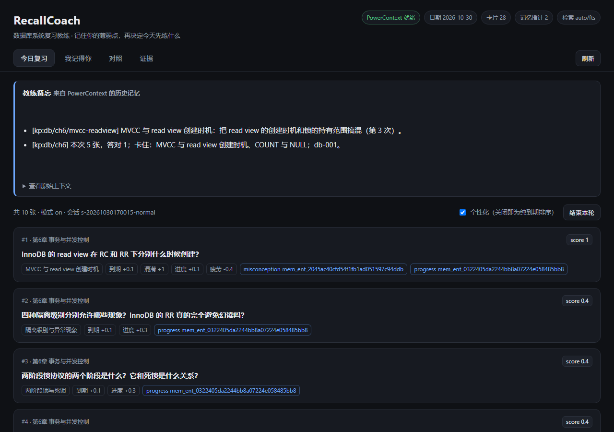
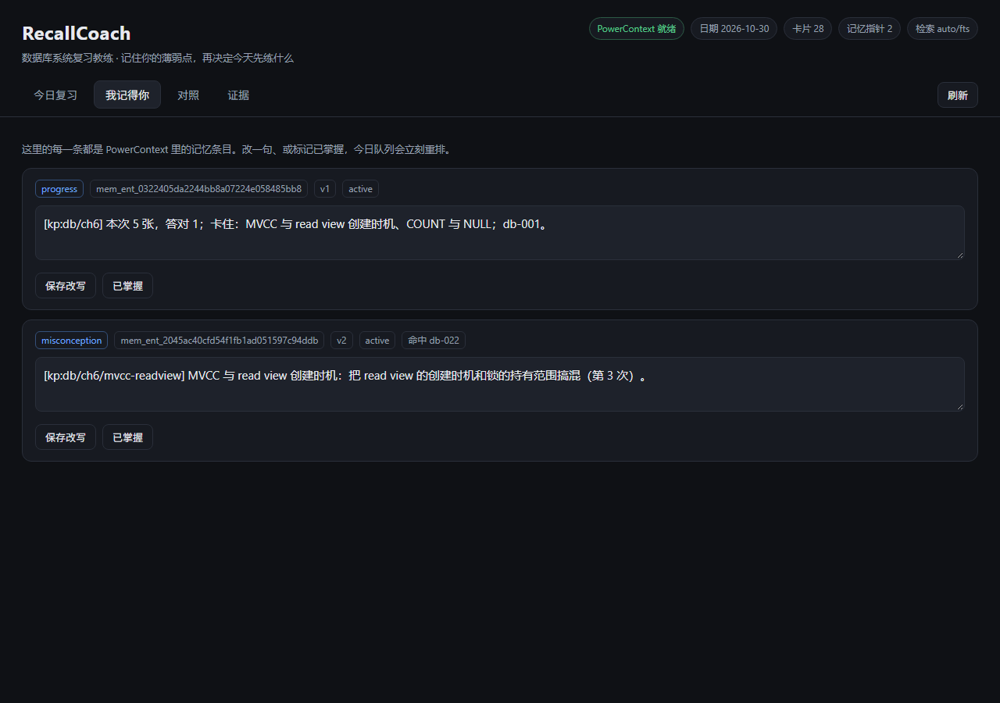
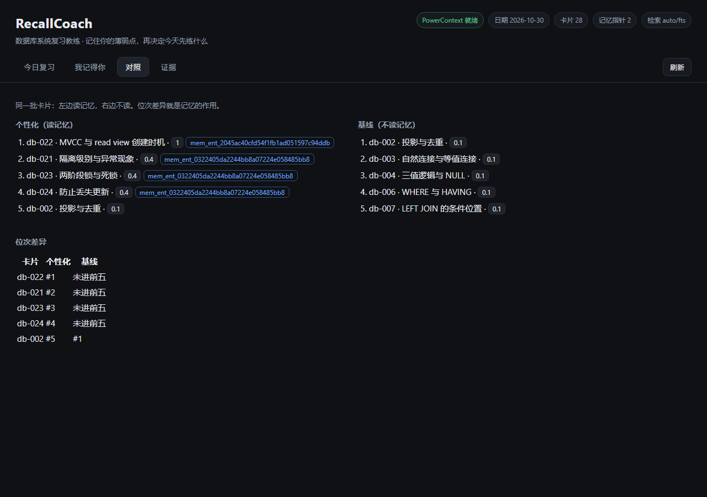
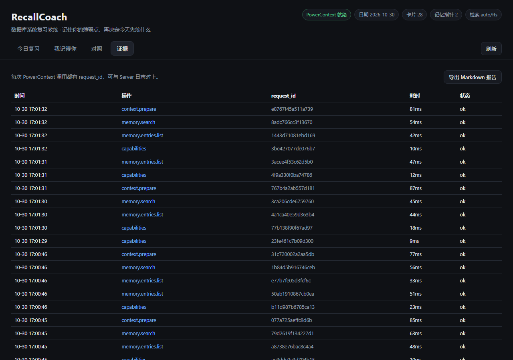

读懂了，一周后全糊
范式判断、EXPLAIN 读法、隔离级别现象，看书时都懂；隔一周再问，只剩下"好像有个 read view"。
OceanBase 2026 大赛 · Qoder 赛道
RecallCoach 把薄弱点、具体混淆和讲解偏好写进 PowerContext，每次出题前再读回来， 决定今天先练什么。零模型依赖，本地可跑，每条记忆都能被改写和撤回。
范式判断、EXPLAIN 读法、隔离级别现象，看书时都懂；隔一周再问，只剩下"好像有个 read view"。
纸面、截图、聊天记录、脑子里。复习时只能重读教材，说不清到底是哪三个知识点没掌握。
它按算法排题，不知道你已经在 MVCC 的 read view 上翻车第三次，也不知道你更吃"先公式后例子"。
两个数据面刻意分开：流水进 SQLite，判断进记忆层。
SM-2 到期分与记忆加权合并排序，答错的卡当天仍在队列里，方便立刻再练。
每张卡显示到期 / 薄弱 / 混淆 / 进度 / 疲劳各贡献多少，记忆命中带 entry_id。
讲解区上方是由 context/prepare 生成、带引用的历史备忘，不是通用鸡汤。
记忆时间线，支持改写（revise）与标记已掌握（retire），版本号递增可追溯。
关掉个性化就是纯到期排序；两列并排，位次差异就是记忆的作用。
每次调用都记 request_id、耗时与命中；一键导出 Markdown 报告。
同一批到期卡片，只切换"读不读记忆"。下面是接真实 PowerContext 1.2.0 运行时的输出：
第 1 次答错 skip/lapses<2 未写入
第 2 次答错 write/threshold-met mem_ent_… v1
第 3 次答错 revise/dedupe mem_ent_… v2同一知识点只留一条有效条目；第三次是修订，不会堆成三条。
| 卡片 | 读记忆 | 不读记忆 |
|---|---|---|
| db-022 MVCC read view | #1 | 未进前五 |
| db-021 隔离级别与异常现象 | #2 | 未进前五 |
| db-023 两阶段锁与死锁 | #3 | 未进前五 |
| db-024 防止丢失更新 | #4 | 未进前五 |
| db-002 投影与去重 | #5 | #1 |
db-022 的分数从 0.1 变成 1.0（当天已练过，含疲劳扣分），来源是一条真实写入的混淆记忆。
| 接口 | 在项目里的作用 | 可核对的东西 |
|---|---|---|
/v1/memory/remember | 写入薄弱点、混淆、讲解偏好、进度叙事 | 返回的 entry_id 与 version；页面上直接显示 |
/v1/memory/entries/list | 出题前取全量记忆，按知识点对齐 | Replay 页的条目清单与命中卡片 |
/v1/memory/search | 用当前队列的章节与知识点做语义补充 | 响应里的 mode 与命中数，进审计日志 |
/v1/context/prepare | 生成"教练备忘"，插在讲解上方 | 返回的 status 与 content |
/v1/memory/entries/revise · /retire | 人工改写或撤回记忆，立即影响排序 | version 递增、state 变为 retired |
每次调用都写审计日志，含 X-PowerContext-Request-ID，可与 Server 日志逐条对上。
一条命令建独立 scope、起一个隔离实例、跑完下面七项，并把原始请求/响应写进证据目录。
.\scripts\verify.ps1| 样例 | 验证什么 | 实测 |
|---|---|---|
| V1 冷启动 | 没有记忆时不假装有 | mode=on，10 张卡，weakness 全 0 |
| V2 写入闭环 | 阈值、去重、修订 | skip → write(v1) → revise(v2) |
| V3 排序改变 | 记忆确实改变出题顺序 | db-022 从榜外到 #1，diff 5 条 |
| V4 修订与退休 | 人改记忆，队列立刻变 | 退休后 diff 归零 |
| V5 上下文注入 | 教练备忘来自记忆 | content 735 字符，卡片标注 entry_id |
| V6 重启后仍在 | 记忆不是内存态 | 重启前后条目数一致 |
| V7 Dashboard | 第三方视角能看到同一批条目 | 需人工登录核对 |
V1–V6 自动断言，V7 只验入口可达——人工核对那一张截图才是证据。




uv tool install --force "powercontext[cli,server]==1.2.0"
cd qoder
.\scripts\bootstrap.ps1 # 生成受保护的环境文件与随机 token
.\scripts\start.ps1 # 起 Server → 等就绪 → 起应用
# 打开 http://127.0.0.1:8080完整步骤、macOS/Linux 差异与故障排查见仓库里的 RUNBOOK.md。默认不配置任何模型与 API Key。